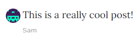

Travel Blog
The travel blog is fully operational and allows registration of users, user comments, moderation tools, post editing, and more.

The travel blog project was created as one of the capstone projects for Dr. Angela Yu’s 100 Days of Python. Built primarily with Bootstrap, the blog features a responsive, mobile-friendly layout and full moderation tools.
Administrators on the blog may make new posts or edit existing posts. All blog content is managed with an SQL database. The administrator can operate the site in its entirety without any programming knowledge - everything is handled by the web server.
In addition to full administrative controls for the blog content, there are also database tables for registered users and user comments (in which the primary key for users is applied as a foreign key to their respective comments). Users may view any blog post, add a comment, and participate in discussion with other users. If necessary, administrators can remove user comments with the click of a button.
This blog was completed as a student project. It is not currently hosted on a live site, but you can view the code in its entirety here:
Travel Blog on Github